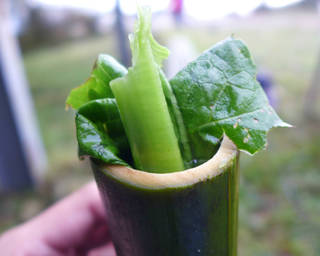

竹筒飯
步驟一：把一整根的竹子砍成一小段。
步驟二：用準備好的木柴生火
步驟三：把竹子清洗乾淨
步驟四：將糯米裝入竹筒中，約八分滿。再裝入水，大約九分滿。
步驟五：裝入高山蔬菜，把竹筒填滿。
|  |
步驟六：用慢火烤，才不會讓米飯烤焦。
山地飯
步驟一：洗好白米與小米，先浸泡半小時後再用大火煮開。
步驟二：摘取當日的野菜，像是米菜，山萵苣，龍葵，刺蔥等。
步驟三：將野菜洗淨後，投入已經煮軟的大鍋飯中。
步驟四：用一大杓，將野菜與米飯攪拌均勻，煮熟即可上桌。
搗薑黃麻糬
步驟一：將糯米粉加入薑黃粉一起沖入80公克熱水,扮勻成團
步驟二：糯米團加入約5公克的沙拉油,搓揉成小團,搓圓後壓扁
步驟三：將糯米糰放入滾水中燙熟
步驟四：砂糖放入乾鍋中,開小火加熱至有香味後,加入黑糖略為扮炒
步驟五：加入薑汁和600公克冷水,以大火煮滾
步驟六：加入糯米糰煮到略呈透明,即可起鍋
步驟七：灑上花生粉,即可食用